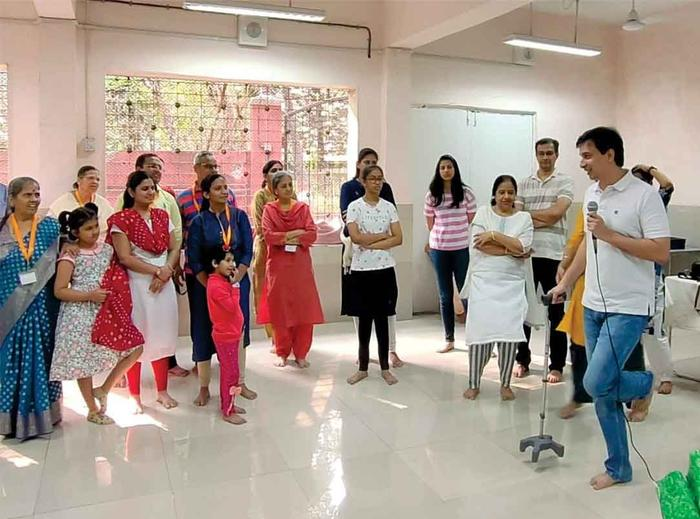

Support The Divine Mission Of Brahmarshi Acharya Upendra Ji
Some people give food. Some give knowledge. Some give shelter. But the Guru gives something far greater. The Guru gives direction when life feels lost. The Guru gives strength when the mind is breaking. The Guru gives clarity when confusion takes over. The Guru gives a path when worldly success still feels empty.
Brahmarshi Acharya Upendra Ji's mission is not limited to discourses or spiritual talks. It is a living movement of sadhana, healing, Dharma, self-transformation and national upliftment.
Through Guru Daan Mahadaan, you have the sacred opportunity to support the work through which seekers receive spiritual wisdom, inner strength, healing practices, life guidance and the courage to transform their lives.
When you support Guru karya, you do not merely give to a cause. You become part of a mission that can change the direction of lives.

Choose your sankalp and contribution
🔒 Secure payment · 80G Tax deduction available
When The Guru's Mission Expands, Thousands Receive A Path
Discourses, satsang, courses and content that carry Acharya Ji's wisdom to more seekers across Bharat and beyond.
Programmes that help seekers experience inner discipline, healing and transformation in their daily lives.
Spiritual and holistic practices that support physical, mental, emotional and karmic well-being.
Work that strengthens Sanatan values, spiritual education and cultural awakening for future generations.
Spaces, teams and systems that help Guru karya reach more people across Bharat and beyond.
When your wealth serves Guru karya, it does not remain ordinary wealth. It becomes an offering.
Your Contribution Becomes Wisdom, Healing, Sadhana And Dharma Seva
Helping Acharya Ji's wisdom reach more seekers through satsang, courses, recordings and digital platforms.
Supporting programmes that help people overcome physical, mental, emotional and spiritual struggles.
Establishing and sustaining spaces for sadhana, healing, learning and seeker guidance.
Supporting the revival, translation, publication and dissemination of spiritual wisdom.
Helping spread teachings through websites, videos, apps, online courses and social media.
Empowering seekers to become disciplined, dharmic and service-oriented contributors to society.
Ways To Personalise Your Sacred Offering
Offer on a birthday, anniversary, festival, family milestone or spiritually significant day.
Become a steady supporter and help sustain long-term spiritual outreach.
Offer in honour of your Guru, parents, ancestors, family members or departed loved ones.
Support discourses, healing camps, books, digital outreach, spiritual centres or sadhana initiatives.
Every contribution is treated as sacred. Donations to Antar Yog Foundation are eligible for 80G tax exemption as per applicable Indian Income Tax rules.
You can contribute via online payment (UPI, net banking, debit/credit card), direct bank transfer (NEFT/RTGS) or offline (cash, cheque or in-person).
For assistance: Email: seva@antaryog.org · WhatsApp: +91 XXXXXXXXXX
When you offer Guru Daan, your contribution may become the turning point in someone's life. A seeker may receive the right teaching. A family may find peace. A person may discover their path. This is not an ordinary donation. It is your participation in the Guru's mission.